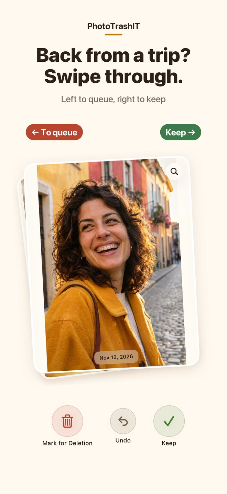
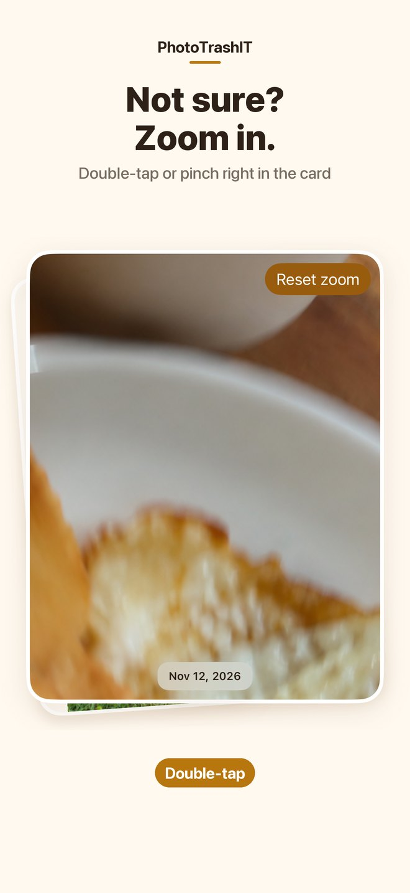
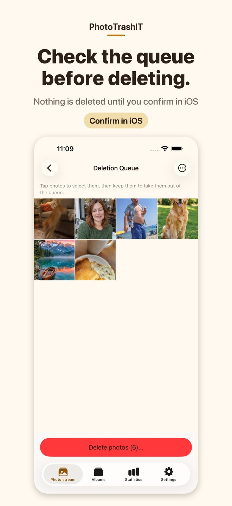
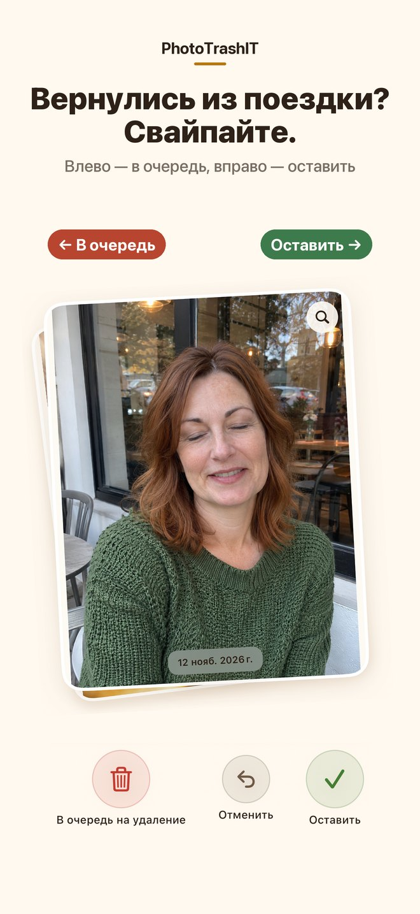
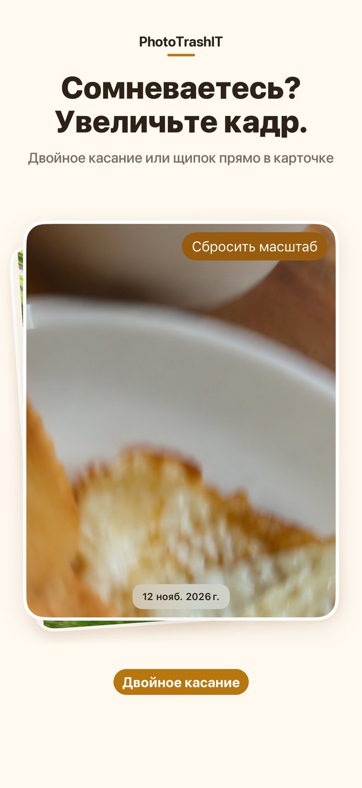
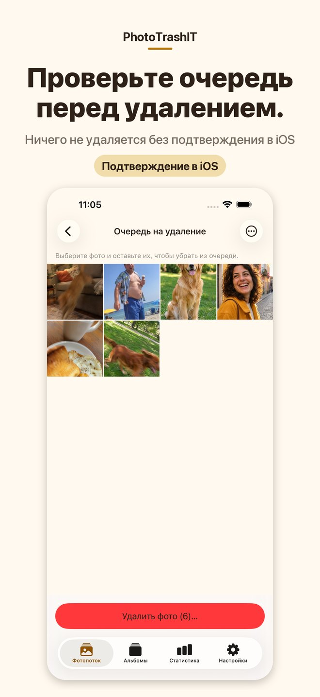

iPhone · One-time purchase · No subscription
Back from a trip? Sort the photos.
Swipe, zoom in on a shot, check the queue. Nothing is deleted until you confirm.
Download on the App StoreiPhone · iOS 17 or later
Three steps after a trip

1. Swipe. Left adds a photo to the deletion queue, right keeps it. You can undo your last decision. 
2. Zoom in. Not sure which shot is sharper? Double-tap or pinch to zoom right in the card. 
3. Check the queue. Take back anything you changed your mind about, then delete. iOS asks you to confirm.
Swipe to decide
Left queues a photo for deletion, right keeps it. Buttons do the same if you prefer tapping, and you can undo your last decision.
Review before deleting
Open the queue, remove anything you changed your mind about, then delete the batch. iOS asks you to confirm every deletion.
Pick up where you left off
Your progress is saved on the device, so you can sort a few photos at a time.
Private by design
Photos are processed on your iPhone. No account, no ads, no analytics, no developer server. The developer never receives your photos.
Safe deletion
Deleted photos go to the Photos app's Recently Deleted album, where they usually stay for about 30 days or until you empty it yourself. Storage is freed only after that. PhotoTrashIT never permanently deletes anything. If you use iCloud Photos, deletions sync to all your devices. More about deleting.
Price
A one-time paid download. No in-app purchases and no subscription.
Разберите фото после поездки
Свайпайте, увеличивайте кадр, проверяйте очередь. Ничего не удаляется без подтверждения.
Загрузить в App StoreiPhone · iOS 17 или новее

1. Свайп. Влево — в очередь на удаление, вправо — оставить. Последнее решение можно отменить. 
2. Увеличение. Сомневаетесь, какой кадр резче? Двойное касание или щипок увеличат фото прямо в карточке. 
3. Проверка очереди. Верните то, что передумали удалять, затем удалите. iOS попросит подтвердить.
Удалённые фото попадают в альбом «Недавно удалённые» приложения «Фото» и обычно хранятся там около 30 дней. Место освобождается только после очистки этого альбома. PhotoTrashIT ничего не удаляет навсегда. Фото обрабатываются на iPhone: без аккаунта, рекламы и аналитики. Разовая покупка, без встроенных покупок и подписки.